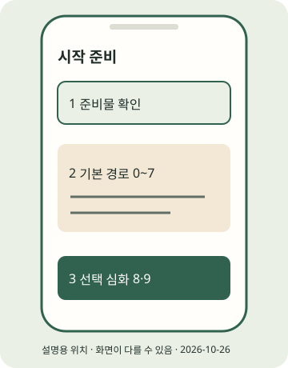
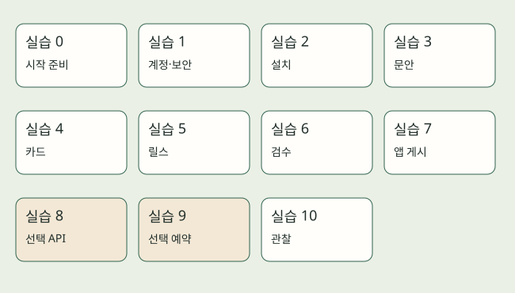

(실습) 실습편 / 0
(실습) 0. 시작 전에
오늘의 경로와 준비물을 정한다.
2026년 10월 조사 기준 · 확인일 2026-10-26 · 근거: PRAC-25 · E2E 한눈에 보기
진행 기록은 자바스크립트를 켜면 이 브라우저에 저장합니다.
이 실습의 흐름
하린과 정 선배는 가상 인물입니다. 예제는 합성 자료로 연습하고, 실제 게시에는 본인이 확인한 자료를 씁니다. 이 교재의 앱 메뉴는 일부 미확인이며 실계정 게시 성공을 검증하지 않았습니다.

STEP 01 · 오늘의 전체 지도 읽기
오늘의 전체 지도 읽기
지금 하는 일
실습 0~7을 오늘의 기본 경로로 고릅니다.
왜 하는지
계정과 개발자 설정을 한꺼번에 준비하다 멈추지 않기 위해서입니다.
따라 하기
- 준비물 PC·휴대폰·본인 이메일을 놓고 약 3~4시간을 비워 둡니다. 교재의 편집상 시간 배분이며 완주 보장이 아닙니다.
- 아래 지도에서 계정 → 설치 → 문안 → 카드 → 릴스 → 검수 → 앱 게시를 읽습니다. 카드 또는 릴스 하나부터 게시해도 됩니다.
- 실습 8 API·9 예약은 선택 심화입니다. 개발자 앱·토큰·공개 URL은 실습 7 수동 게시에 필요 없습니다. 실습 10은 게시 뒤 관찰입니다.

이렇게 보이면 성공
오늘은 본인이 검수한 첫 게시물 주소를 기록하고, 나머지 자동화는 선택한다는 목표가 정해졌습니다.
이렇게 보이면?
- 시간이 부족하면 카드 또는 릴스 하나를 먼저 마치고 E2E에 남은 단계를 표시하세요.
- 실계정이 아직 없으면 생성·검수 드라이런까지 먼저 연습할 수 있습니다.
Windows
이 단계는 Windows와 무관한 휴대폰 또는 웹 작업입니다. 휴대폰 OS와 앱 버전의 화면 차이는 공식 도움말로 확인하세요.macOS
이 단계는 macOS와 무관한 휴대폰 또는 웹 작업입니다. 휴대폰 OS와 앱 버전의 화면 차이는 공식 도움말로 확인하세요.STEP 02 · 진행 기록과 도움받는 법
진행 기록과 도움받는 법
지금 하는 일
E2E 체크리스트에서 진행 상태를 남깁니다.
왜 하는지
어느 단계에서 막혔는지 다시 찾기 위해서입니다.
따라 하기
- E2E 한눈에 보기를 열고 이 단계를 체크해 보세요. 각 항목을 누르면 해당 절로 이동합니다.
- 브라우저 저장소(localStorage)는 이 브라우저 안의 작은 기록 공간입니다. 계정 동기화가 아니며 서버에 보내지 않습니다. 비밀번호·토큰은 쓰지 마세요.
- 막히면 해당 단계의 이렇게 보이면?을 먼저 읽습니다. 해결되지 않으면 명령·오류 문구·OS·파일 위치만 정리해 도움을 구하세요.
이렇게 보이면 성공
체크를 바꾸면 완료 수가 바뀝니다. 저장이 허용된 브라우저에서는 새로고침 뒤에도 유지됩니다.
이렇게 보이면?
- 저장할 수 없다고 나오면 현재 페이지에서는 계속 체크하고, 이동 전 진행을 별도 메모에 적으세요.
- 앱 메뉴가 다르면 단정해서 누르지 말고 해당 공식 도움말과 미확인 표시를 읽으세요.
Windows
이 단계는 Windows와 무관한 휴대폰 또는 웹 작업입니다. 휴대폰 OS와 앱 버전의 화면 차이는 공식 도움말로 확인하세요.macOS
이 단계는 macOS와 무관한 휴대폰 또는 웹 작업입니다. 휴대폰 OS와 앱 버전의 화면 차이는 공식 도움말로 확인하세요.지금 내 손에 있는 것
오늘의 경로와 준비물을 정한다. 아래 단계 확인을 모두 마쳤는지 E2E에서 다시 봅니다. 선택하지 않은 포맷·심화는 미완료로 남겨도 됩니다.